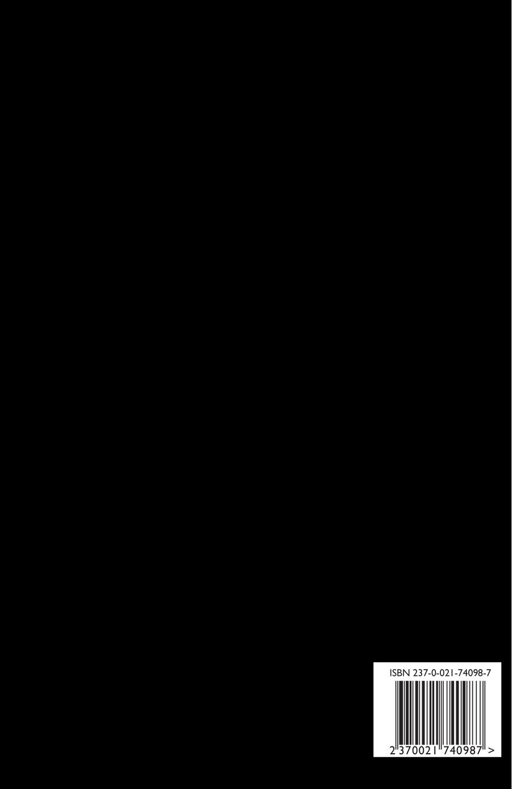

Les Fleurs du Bon (multilingual)
Charles Baudelaire, tr. Patrick Swickard
6"x9" paperback, 492 pages
"Oh je voudrais tant que tu te souviennes"
Cette chanson était la tienne
C'était ta préférée je crois
Qu'elle est de Prévert et Kosma
Et chaque fois "Les feuilles mortes"
Te rappellent à mon souvenir
Jour après jour les amours mortes
N'en finissent pas de mourir
- Serge Gainsbourg
Charles Baudelaire first published his best known collection of poems, Les Fleurs du Mal (Flowers of Evil) during his lifetime in 1857, with a few later editions containing more poems. These poems achieved a lot of notoriety for their dark and morbid tone, with a few even being censored by the government for content that was considered objectionable.
After Baudelaire’s death, a few more editions of this book were published posthumously by his mother and some of his friends, including further poems that had not been collected in previous editions. It was discovered at this time that, in apparent emulation of William Blake, nearly all of the haunting poems previously published had unpublished “twins” of a somewhat lighter nature. Baudelaire’s diaries suggest that at one point he had intended to publish these together as a companion volume to his previous works in the same manner that Blake had done before him in a volume called Les Fleurs du Bon (Flowers of Good).
Though there are flashes of brilliance here and there, most of these “mirror” poems were of significantly lower quality than the ones found in Les Fleurs du Mal, and thus were mostly forgotten and infrequently translated.
I am proud to present here for the first time all of these poems gathered together in one volume as the author intended and translated into English. May God have mercy on my soul.
This multilingual edition contains both the original French and the English translations on facing pages.